# 🏰 无尽作业集教程
📖 预计阅读时间: 20 分钟作业集是最新版本的无尽挑战模式：支持 149 关卡切换、全自动挂机，并且支持 导入导出作业集。在 MaaPvz 中更新到最新测试版即可体验。
# 序章
点击「编辑作业集」并运行一次，即可打开 html 作业集工具。
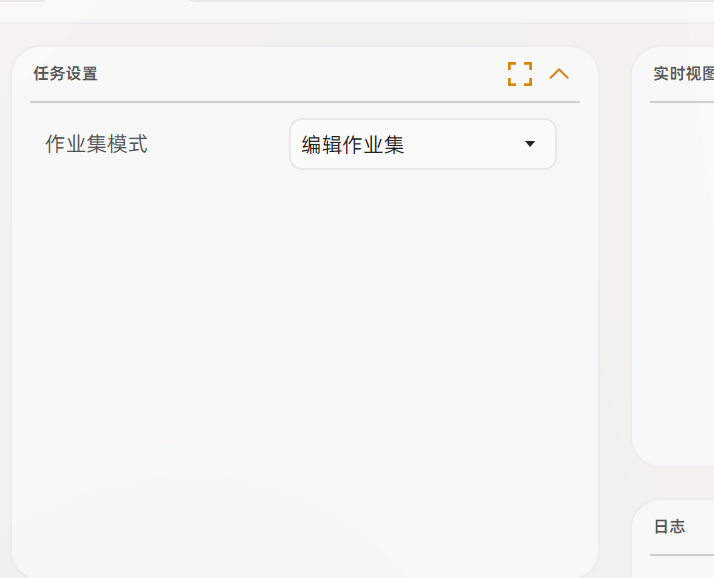
后续切换为「运行本地作业集」，且每次运行之前请点击「保存作业集」——会使用你目前选择且保存的作业集进行过关。
# 1. 准备工作
1.1 识别资源（模板图）必须齐全
作业集模式依赖识别资源（模板图）来判断当前界面与节点，必须保证识别资源齐全，否则功能无法正常工作。
如果你所需的植物或者神器缺少素材，需要自行截图适配，请参考：👉 无尽挑战植物神器卡面收集教程 →
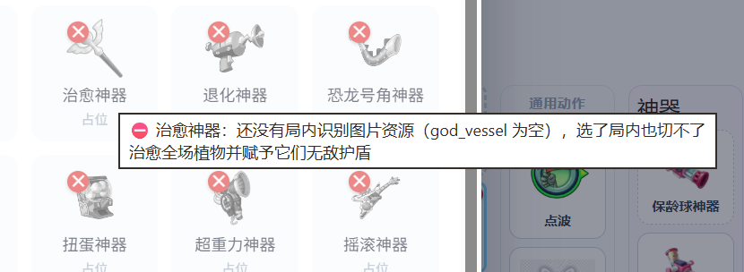
.png)
.png)
# 2. 导入作业集
这个板块教你如何使用别人分享的作业集。
导入作业集之后，必须先保存一次作业集才可以使用，否则配置不会生效。
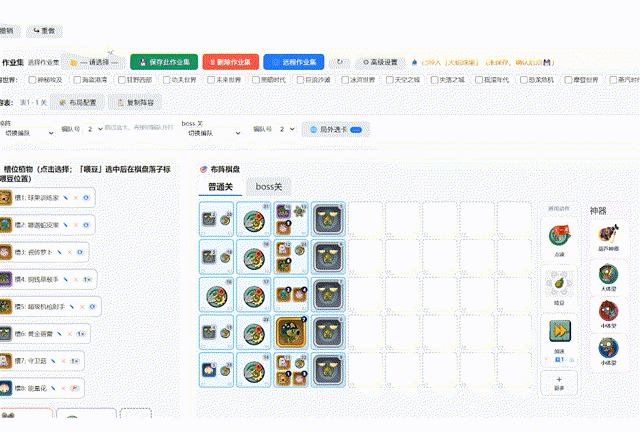
保存作业集后，在 MaaPvz 中将任务选项切换为「使用本地作业集」，该选项会使用网页端选择并最新保存的作业集。
# 3. 基础操作
3.1 落子
把植物槽拖到棋盘格子上，即为一次落子。
- 同一个格子可以重复放置（最多 9 个），超出后显示
+N角标。
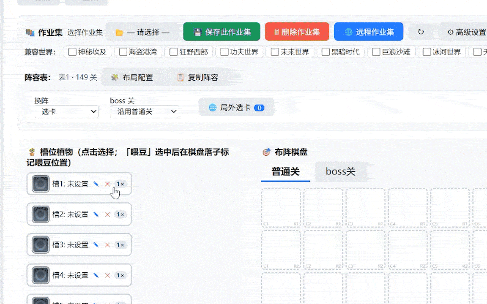
3.2 快捷键
WASD：移动光标 / 选格。右键/F：切换落子动作。
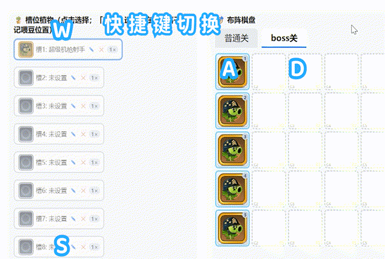
3 种落子动作各自的用途：
- 喂豆：给格子喂能量豆。
- 铲子：铲掉格子上的植物。
- 点击格子：只点不种。
3.3 三条链与顺序
拖动即可调整各步骤的执行顺序：
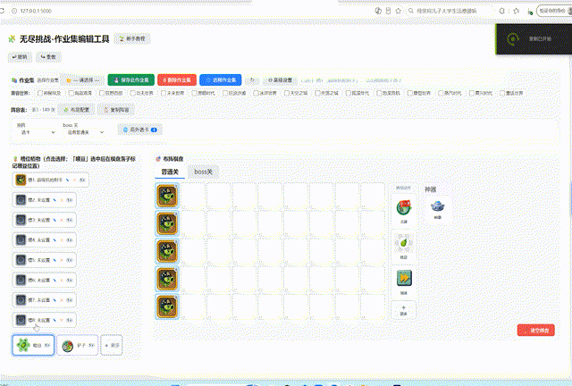
三条链的语义：
- 单次链：进局内执行一次（开局布阵）。
- 循环链：反复执行（补种 / 喂豆）。
-
收尾链：有两种触发状态——
- ① 识别僵尸头像走到最后一波后执行；
- ② 循环链执行一定次数后执行。
收尾链执行后的超时后动作，可选三种：
- 重开
- 执行子动作（单次 / 循环 / 收尾）
- 识别结算
Boss 关：
- 棋盘顶部可切换 普通 / Boss 两套棋盘与链。
- Boss 阵容可沿用普通关，也可以切换编队。
- Boss 关没有收尾链。
# 4. 收尾链
4.1 典型用法
收尾链配置魔甘收尾，且将甜薯的顺序链排序到最前面：
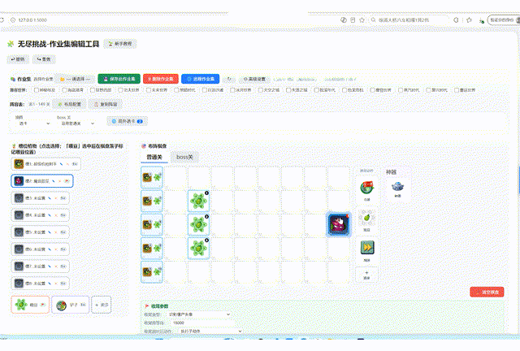
4.2 收尾参数
- 结束条件 / 超时重开：在棋盘下侧面板中配置。
# 5. 通用动作与神器
5.1 通用动作按钮组
通用动作按钮组包含：点波 / 捡豆 / 加速。
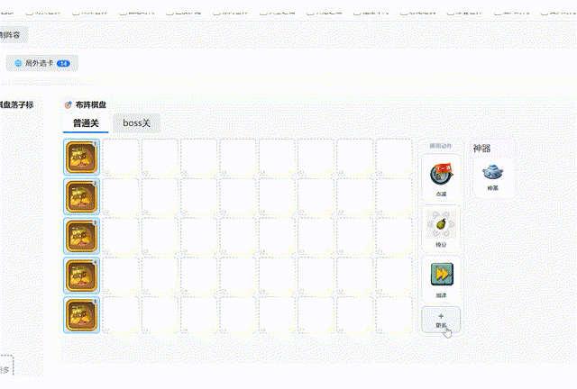
「更多」里的三个动作：
- 切换形态：选槽位 N 次。
- 自定义动作：从坐标表挑键名，支持点击 / 滑动 / 长按 / 多指。
- 滑飞弹 🚀：默认 10ms × 20 原子连击，一般用于天空无尽。
5.2 神器板块
操作流程：选神器 → 根据自己神器的类型选择对应的操作 → 插入「使用神器」（见上方同一张演示图）。
5.3 等待节点 ⏱
在某一步后面插入一个等待节点，并设置等待时长：
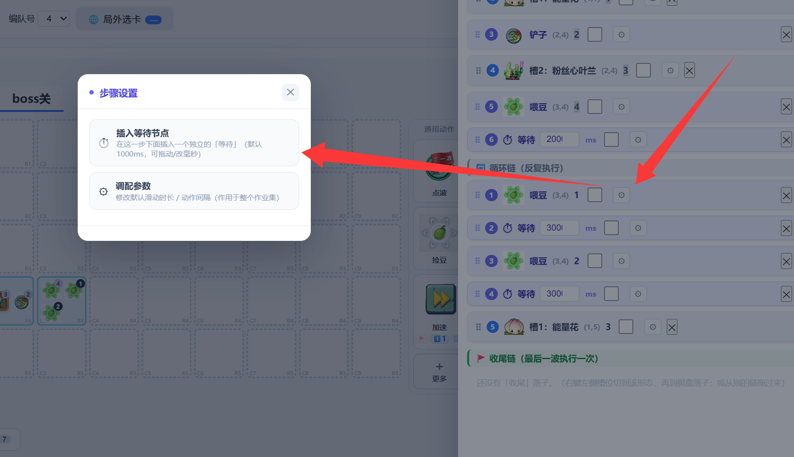
5.4 ⚙ 步骤设置（调配参数）
- 连击次数 ×N / 连击间隔 ms / 连击参与识别开关。
- 连击说明：所有动作自带 0.1 秒的间隔，使用连击 + 连击不参与识别时，才会使单个动作执行没有间隔。
- 滑动时长：0 = 瞬滑；滑飞弹有独立时长（默认 10ms）。
- 相邻多步可标成无间隔组
「」：连发不插间隔。
# 6. 阵容管理
6.1 局外选卡
选择卡组时，局内和局外卡组都可以右键收藏。
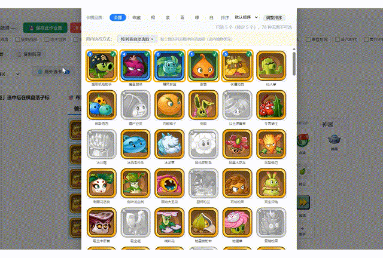
6.2 自动选卡慢？
如果自动选卡很慢，可以修改为 一键选取 和 复用已有配置：
- 一键选取：收藏好准备上阵的植物再开启。
- 复用当前配置：如果你已经选了 80 张卡，那么就会直接点确定。
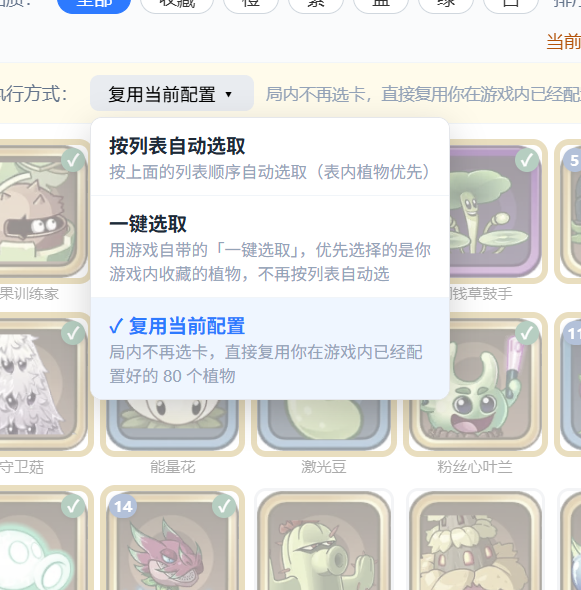
6.3 换阵容
支持 编队 / 选卡 两种方式：
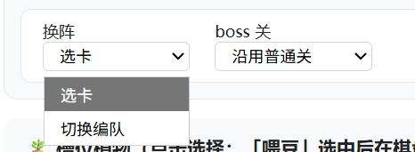
6.4 阵容表灵活覆盖
支持多表逐槽沿用 / 覆盖：

# 7. 保存与运行
改完必须保存才生效，没有保存的修改不会被应用。
- 起始关卡：在作业集设置里配置。
- 运行日志：运行中在右下角查看，或在调试目录中查阅。